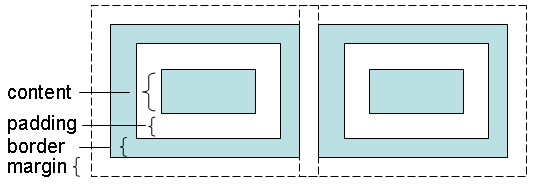
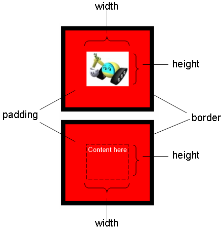
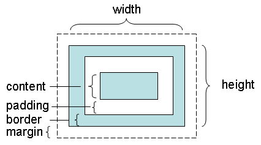
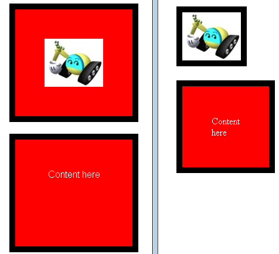
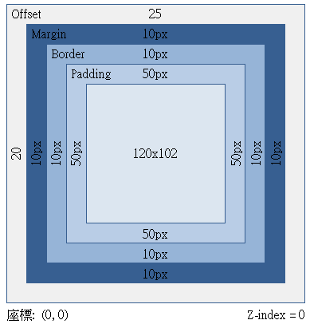
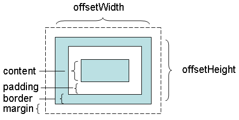
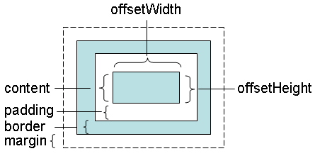

You can define an element's width and height through stylesheets, the style attribute, or the style property prescribed via JavaScript; but should be careful about what the width and height means actually. The definition of an element's width and height depends on which box model the browser takes. A box model views an element as a box which contains four parts.

The content part is used to place the element's real content, such as a text, an image or child elements. Every element has a border. The padding part means the distance between the content and border. The margin part means the distance from this element's border to the other element's border. The content has a width and height. The top, right, bottom, and left padding can be changed independently. The border has a width. The top, right, bottom, and left margin can be changed independently, too.
If the browser adopts the standard CSS Box Model, the specified width and height of an element means the width and height of the content part.

Standards-compliant browsers adopt the CSS Box Model. For example:
<html>
<head>
<meta content="text/html; charset=UTF-8" http-equiv="content-type">
<style type="text/css">
img {
color: #ffffff;
background-color: #ff0000;
border-width: 10px;
border-color: black;
border-style: solid;
width: 100px;
height: 82px;
padding: 50px;
margin: 10px;
}
div {
color: #ffffff;
background-color: #ff0000;
border-width: 10px;
border-color: black;
border-style: solid;
text-align: center;
width: 100px;
height: 82px;
padding: 50px;
margin: 10px;
}
</style>
</head>
<body>
<img src="../images/caterpillar_small.jpg">
<div>Content here</div>
</body>
</html>
The image in the above page fills the content part with width and height 100 x 82. The element has a padding 50px and border-width 10px, so the total visible area of the element is 220 x 201. That is (100 + 50 * 2 +10 * 2) x (82 + 50 * 2 +10 * 2). The div element is used for comparison. It has the content part with the same width and height, and the same padding and border-width.

The above figure, however, is displayed and captured using Firefox. Internet Explorer will render a different result. This is because that, Internet Explorer takes the default compatibility mode, sometimes called "quirks mode", for the above page. In quirks mode, basically, an element's width and height contains the content, padding, and border.

The right part of the following image shows the result viewed in Internet Explorer (The left part is viewed in Firefox).

Since the image size has the same width and height, the image display hides the padding. As for the text in the div section, it appears vertically because of being compressed. (Try to set the CSS overflow attribute auto or scroll. What will you see?)
The quirks mode is called quirks because it has many quirky adjustments. For example, in order to show the image and text, the quirks mode adjusts the content size automatically. In Internet Explorer 8 Developer Tools, you'll even see the wired information about the image element's dimension as follow:

To avoid entering the quirks mode in Internet Explorer, you should provide the proper <!DOCTYPE>. In Internet Explorer 8, you should provide the following:
<!DOCTYPE html PUBLIC "-//W3C//DTD HTML 4.01 Strict//EN">
Insert the above to the first line of the sample page, Internet Explorer will adopt the standard CSS Box Model. You'll see the same result as in Firefox.
Every element has an offsetWidth and offsetHeight property. These two properties are read-only, used to retrieve the width and height of an element. In the standard CSS Box Model, they will return the sum of the border, padding, and content.

In quirks mode, they'll return the width and height of the content part.

To avoid entering the quirks mode, it's highly recommended to set the proper <!DOCTYPE> to make sure the browser adopting the standard CSS Box Model.